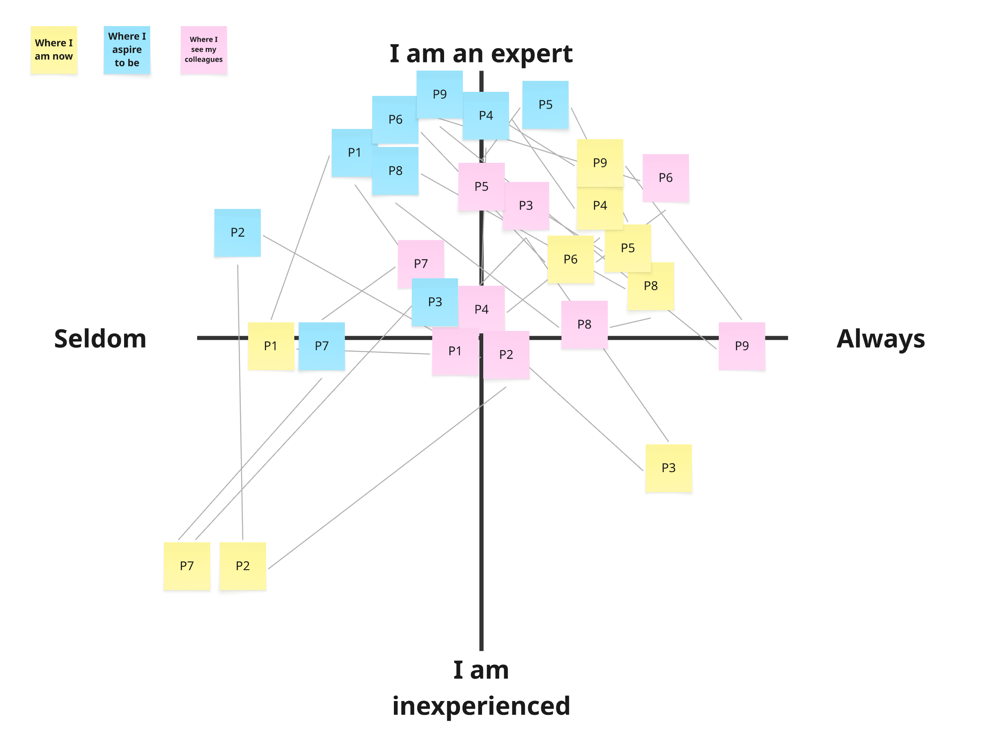
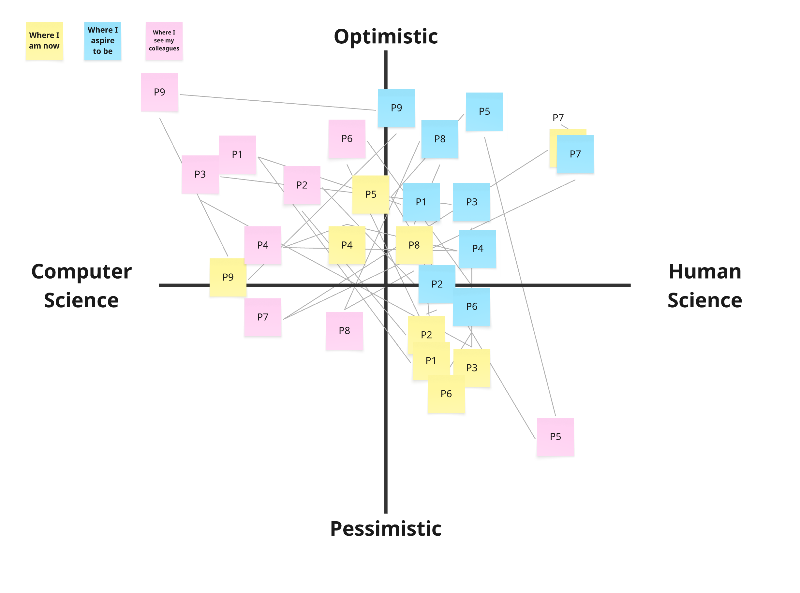

To open the day, we used a mapping exercise to explore where educators currently stand in their relationship with AI — and where they'd like to go. Each participant received three colours of sticky notes representing different perspectives:
These were placed across two quadrants:
Quadrant 1: Usage & Expertise
Quadrant 2: Attitude & Field
Quadrant 1: Frequency and expertise of AI use

About two thirds of participants identified as regular AI users, while one third seldom uses it. Interestingly, the regular users all expressed a desire to deepen their knowledge of AI while actually reducing how much they use it — suggesting a tension between familiarity and dependency. Those who rarely use AI aspired to learn more, often with greater ambition than the regular users, while keeping their usage roughly the same or increasing it slightly. Across the board, participants perceived their colleagues as using AI somewhere between sometimes and always.
Quadrant 2: Stance towards AI and field of practice

Most participants placed themselves near the centre of both axes, though with a slight lean toward the human science and pessimistic sides. Notably, participants tended to perceive their colleagues as more computer-science-oriented and more optimistic than themselves. Most also expressed a desire to shift toward the human science side and to become more optimistic about AI futures.
This last point sparked a broader discussion: what would it actually take to feel more optimistic about AI? Participants identified several potential drivers:
The group also reflected on the echo chambers many educators find themselves in, and on the question of what expertise even means in this context, with the consensus that explainability is inherently subjective and depends on who you're talking to.
Running this mapping exercise with students may be a valuable next step. It can help educators better understand students' motivations and their relationship with AI, and open up a more honest dialogue between both sides of the classroom.